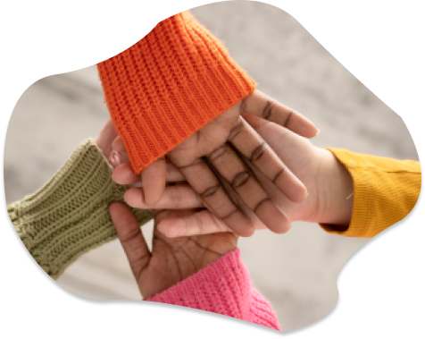

Quiénes somos

Somos Herederas Solidarias, una ONG dedicada a brindar apoyo a personas que enfrentan dificultades para acceder a un plato diario.
Nacimos y crecimos con la misión de acompañar a estas familias, poniendo un énfasis especial en los más pequeños, quienes son nuestra principal preocupación.
Disponemos de una red de herederas, instaladas por nuestros hogares solidarios, que se mantienen llenas de vidas donadas por ellos mismos, para que las personas puedan retirarlas diariamente.